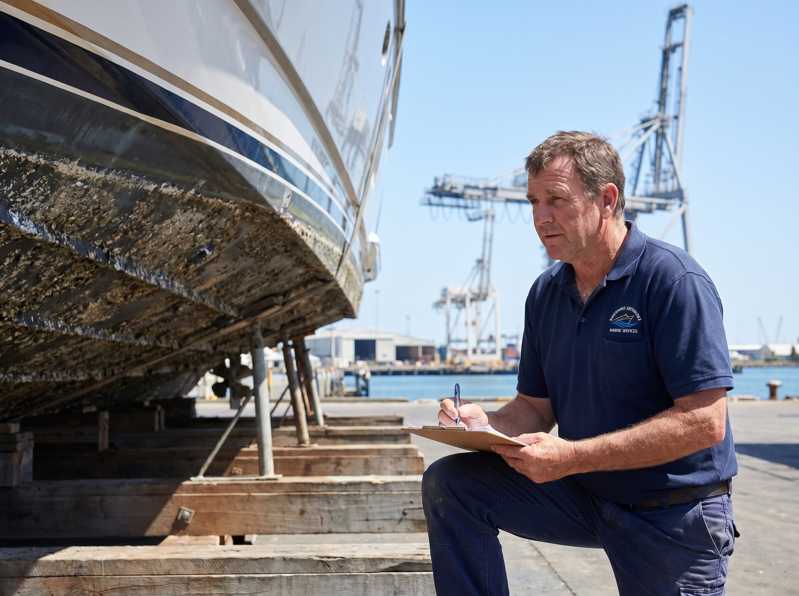
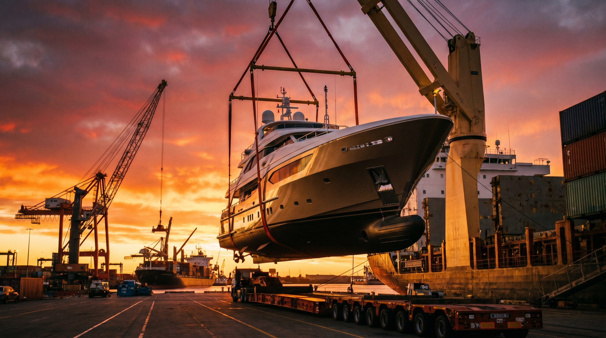
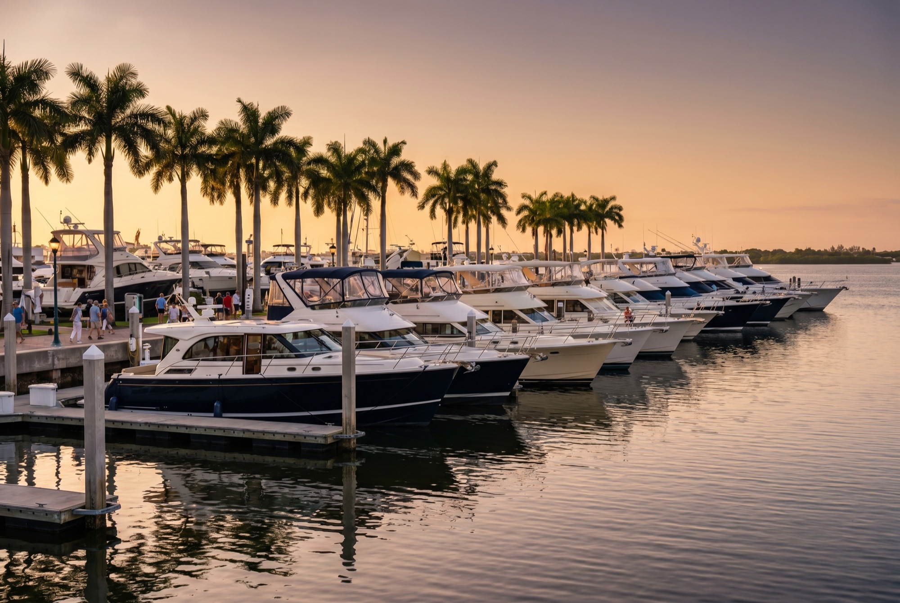
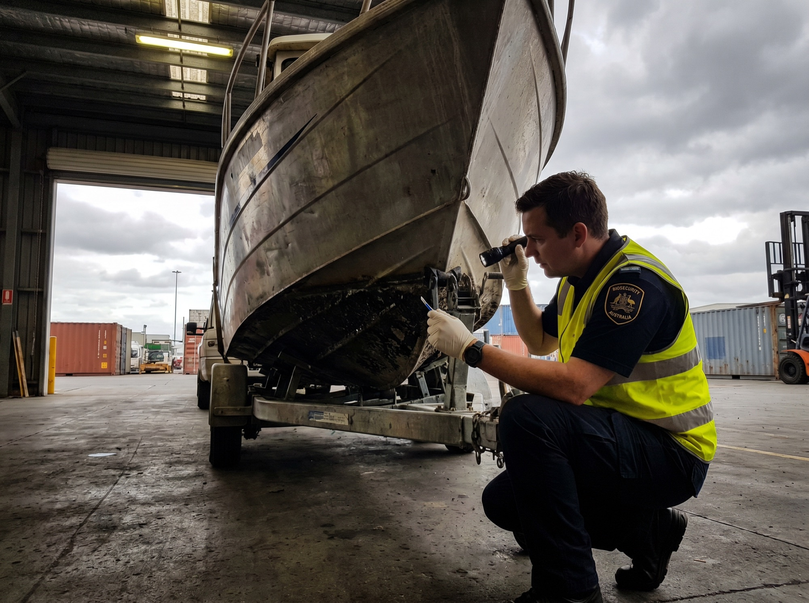

10× The Choice. Zero Import Duty. Fully Handled.
From a Florida sport cruiser to a Sea Ray off a freshwater lake — we've been moving American boats and yachts into Australian waters for over 30 years. US-built vessels arrive duty-free under the AUS-US Free Trade Agreement.
Importing an American boat isn't freight forwarding with a different cargo — it's a completely different discipline. Marine surveys, escrow, CFC permits, anti-fouling, trailer approvals, thermal imaging, cradle construction, sailing-in clearance. We've been bringing boats home from US ports since before most freight brokers had a website.

independent pre-purchase surveys arranged at every major US port — from Florida to California.
your US dollars are released only when the vessel is collected.
we match the method to the vessel — not the other way around.
handled in parallel with shipping — no last-minute panic at the wharf.
bonded facilities in Sydney, Brisbane, Melbourne & Fremantle.
The right shipping method depends on the dimensions of your vessel — beam, height and length. Here's how we match each American boat to the safest, most economical route home from US ports.
Boats and yachts that fit inside a 40-foot container ship at the most economical rate available. Consolidated services from Los Angeles, Charleston & Miami.
On trailers (RoRo) or on cradles using MAFI platforms (Break Bulk). Priced per cubic metre — we can reduce dimensions to save you thousands.
Specialised charter services or multiple flat-racks on container ships. Ex-USA via Port Everglades, Fort Lauderdale, Long Beach & Savannah to Australian waters.
From the moment you spot the boat in the US to the day you collect it from an Australian marina — we coordinate every leg.
Get Instant Quote
We arrange an independent inspection through a SAMS or NAMS-accredited marine surveyor at the boat's US location. Verify condition, authenticity and a fair purchase price before you wire a single US dollar.
Escrow available — your funds are protected until the vessel is collected.
CFC permits for air-conditioned yachts, trailer import approvals through DOTARS (3–8 weeks lead time), travel logs for vessels crossing international waters, plus the Letter of Authority for customs clearance.
Container consolidation, Roll-on Roll-off, Break Bulk or specialised charter — matched to your vessel's dimensions, value and US departure port. We also coordinate inland transport across the States.
Licensed customs brokerage, 0% duty under the AUS-US FTA, 10% GST calculation, thermal imaging biosecurity checks, anti-fouling verification, bilge water and plant material clearance. We resolve issues before they become storage fees.
Once cleared, your vessel is transported to your marina, yard or trailer pickup. We can also assist with state or national registration through the Australian Shipping Registration Office.
Crossing the Pacific under your own sail or engine? Australian Border Force requires notification at least 96 hours before arrival. We handle the customs clearance, documentation and port-of-entry logistics so you can focus on the crossing.

The US market offers thousands of new and used models not available in Australia — from Sea Ray and Bayliner to Wellcraft, Carver, Silverton. Many pre-owned American boats have only cruised fresh-water lakes and dams.
US-manufactured boats enter duty-free under the Australia-US FTA.
Days from US East Coast to Australian ports (50–60 days economy).
Selection compared to the local Australian market.
Pre-shipment maintenance is significantly cheaper in the US.
Cost: 10% GST applies on CIF value · Quarantine inspection from $139 · Marine transit insurance ~1.5% of insured value.
Every vessel operating in Australian waters must be registered. Which authority depends on how far from shore you intend to cruise.
State or territory authority where the vessel primarily operates. Standard for personal use within Australian coastal waters.
The Australian Shipping Registration Office (Canberra) handles vessels operating internationally or beyond coastal waters.
Australian biosecurity is the strictest in the world — and used boats are the highest-risk cargo. Most cleaning orders and storage fees come from the same five issues. We prep for all of them before the vessel leaves the US.
We pre-clean, shrink-wrap, and document — before the boat leaves the US port.

Around 21–28 days express from US East Coast ports, or 50–60 days on economy services. Plus ~7–14 days for customs and quarantine on arrival. We provide realistic timelines per route in your quote.
US-manufactured boats are duty-free under the Australia-US Free Trade Agreement. 10% GST still applies on the CIF (Cost + Insurance + Freight) value. Boats built outside the US typically attract 5% general duty even when shipped from a US port — we confirm the duty position before you commit.
Boats up to 2.59m beam and 1.8m high typically ship by shared container (cheapest). Wider or taller vessels go RoRo on a trailer or Break Bulk on a cradle. Superyachts use specialised charters or multiple flat-racks. We recommend the safest, most economical option per vessel.
An independent inspection by a SAMS or NAMS-accredited surveyor — verifying condition, authenticity, and fair market value. We strongly recommend one before any US purchase. It typically saves more than it costs by exposing hidden issues or supporting price negotiation.
If you're sailing your yacht into Australia under its own power, Australian Border Force requires notification at least 96 hours before arrival, by email (yachtreport@abf.gov.au), fax (+61 2 6275 6331) or phone (+61 3 9244 8973). We coordinate this on your behalf.
Yes — but the trailer needs a separate import approval. DOTARS takes 3–8 weeks to process during peak season. We lodge applications in parallel with shipping so the trailer doesn't sit at the wharf accruing storage fees.
Yes — yachts with air-conditioning or refrigeration require a CFC import permit. We notify customs in advance and assemble the documentation as part of the standard import package.
1 Citywest Court,
Gilberton QLD 4208, Australia
Don't leave the import to chance. Work with marine specialists who've handled everything from tenders to superyachts — out of every major US port — since the 90s.
Get Your Free Boat Quote Now